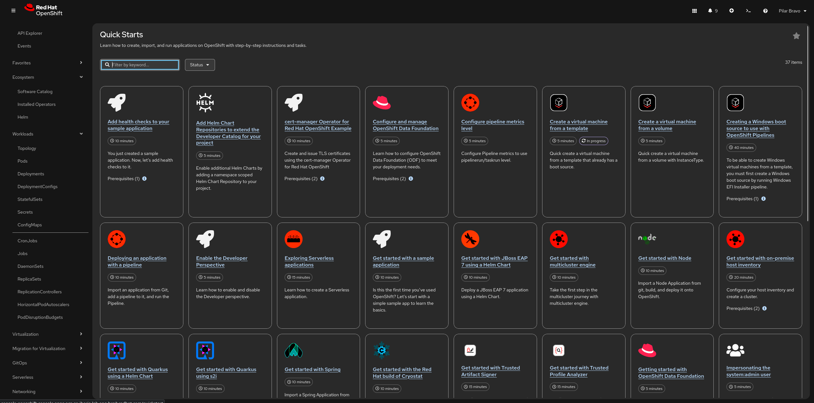

The quick starts
In OpenShift, Quick Starts are interactive, step-by-step tutorials built directly into the web console. They are designed to provide "hands-on" learning without forcing the user to leave the platform for external documentation.
Think of them as in-app GPS for your cluster—they don’t just tell you what to do; they point to the specific buttons you need to click.
Where to find them
Quick Starts are located in two primary places:
-
The Help Menu: Click the (?) icon in the top header and select Quick Starts. This opens a catalog of all available tutorials.
-
The "Add" Page: In the Topology view, click on Add Page to see the available quick starts.

Real-Time UI Highlighting
When you start a task (e.g., "Create a Serverless function"), the Quick Start side panel will actually animate or highlight the specific element in the console you need to click next.
Benefit: It eliminates the "where is that button?" frustration common with traditional documentation.
Verification Steps
Each task within a Quick Start ends with a check. The system will ask, "Did your build succeed?" or "Can you see the route?"
-
Success Feedback: If you click "Yes," you get a satisfying green checkmark.
-
Error Correction*: If you click "No," the quick start provides a "Helpful hint" or a link to common troubleshooting steps specifically for that task.
Content Variety
The Quick Start catalog has expanded beyond basic "Hello World" apps to include:
-
AI/ML Onboarding: Deploying Large Language Models (LLMs) or setting up OpenShift AI workbenches.
-
Serverless & Eventing: Walking through the "Scale to Zero" logic.
-
Operator Demos: Many Operators now "inject" their own Quick Starts into your cluster upon installation, teaching you how to use that specific tool (e.g., CrunchyDB or Advanced Cluster Management).
Customizable for Internal Teams
Administrators can create Custom Quick Starts using a simple YAML-based ConsoleQuickStart resource.
The Use Case: Platform Engineering teams use this to create "Internal Golden Paths." You can create a quick start that teaches your developers exactly how to deploy an app according to your company’s security and naming standards.